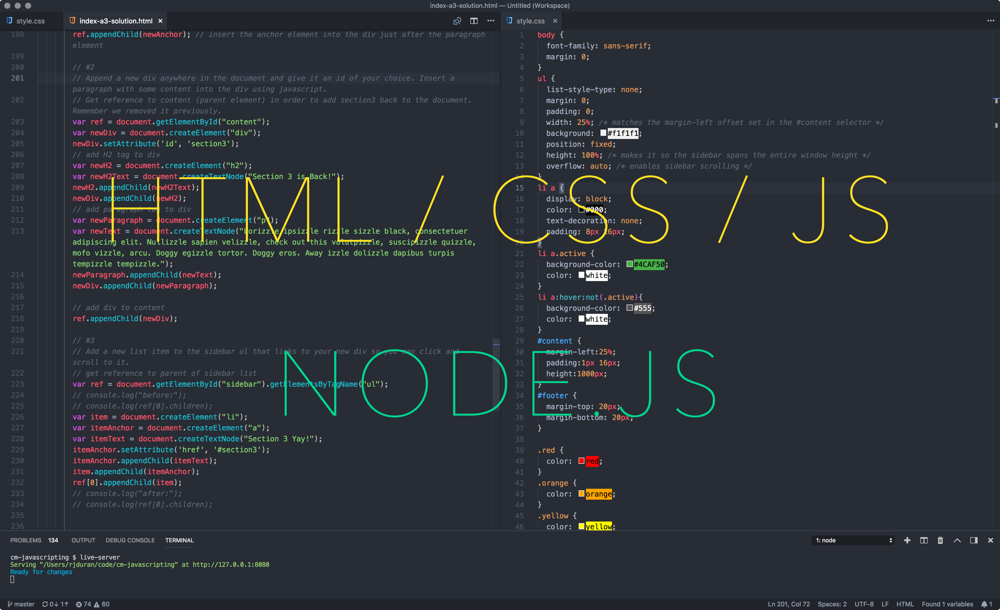

Critical Making 1: Finding Your Superpower Through Digital and Physical Making
Critical Making 1 is a first semester project-based studio course that provides a foundation in the creative process of making with new and emerging digital and physical technologies responsible for building the products and services shaping the world we live in.
In this course students work towards becoming fluent with digital and physical tools and technologies supporting their creative visions for new products and services. This includes working with modern web technologies (languages, frameworks, API’s) to produce functional prototypes, surveying Computer-Aided Design (CAD) tools for 3D modeling and visualization and leveraging digital fabrication tools (3D Printing, Laser Cutting, CNC Milling) to rapidly produce physical objects and prototypes.
The course will culminate in a final project leveraging the various digital and physical tools, techniques, skills, and knowledge gained throughout the semester. Project examples include web-based applications, connected experiences, smart devices, everyday / enchanted / functional objects, media-based installations, and product-based experiences.
Day and Time:
APRD-5005-003 / AM Section - Monday, 9:30 am - 12:30 pm
APRD-5005-001 / PM Section - Monday, 1:30 pm - 4:30 pm
Location:
We have adopted a hybrid (remote/in-person) class structure this semester due to COVID-19. This means anyone can participate in person or virtually over Zoom anytime. The class schedule will indicate when class is to be held in person at the Studio or virtually over Zoom. The following Zoom link is to be used for all class sessions. The required password is provided in Slack.
>> Zoom Meeting (Password Required) <<
Instructor:
RJ Duran
rj.duran@colorado.edu
Slack: @rjduran. #cmstudio on cmcistudio.slack.com
Office hours by appointment. Feel free to reach out to me via slack or email.
Syllabus:
This website is a real-time version of the course syllabus. It is updated weekly throughout the semester. A static version can be downloaded here.
Course Resources
This website is the primary resource for all Critical Making Studio courses. Some of the resources used across the different courses are divided up into sections found on the left sidebar. Course specific resources will be found within the course schedule page specific to each course, also found on the left sidebar.
Do I need to know all of these tools? No! Think of these resources as maps containing many possible tools that could help you accomplish your work and from which you can choose some to learn and work with. There are pros and cons to any tool and all have a set of functionalities and a purpose. As with any tool and any kind of personal creative process you are free to choose anything that works for you.
In addition to the tools found here in the digital space, you have access to physical tools for building anything you can imagine here at the studio, on campus at the Idea Forge, or in the community at BLDG61.
IMPORTANT: In this time of COVID-19, be sure to investigate any policies and regulations for all campus based or non-CU based resources before using them. Be safe.
Our Studios
CMCI Studio facilities include the large main room (West Studio) and adjacent smaller room (North Studio). Both rooms contain different functionalities for developing projects at varying scales and for varying audiences. Read through the Studio Handbook for learning about each room and accessing the various tools and capabilities we have on site.
CMCI Equipment Resources
CMCI has a large collection of media production equipment for students to use. The Armory Vault and ENVD Checkout reservation systems have many items for general purpose use. With each system there are conditions that must be met. Visit each page to learn more. Learn more about all the on campus resources available at https://www.colorado.edu/facilities/cmci-equipment/.
Idea Forge
The Idea Forge is an on-campus design and fabrication facility open to all students located in the Fleming Building (near the Wolf Law Building at Broadway & Baseline Rd). In this course we will be making use of the tools and resources available to build projects and develop skills. Learn more at https://www.colorado.edu/ideaforge/.
BLDG61: Boulder Library Makerspace
BLDG 61 is a free community workshop that provides maker education and technology to the public in a creative and inclusive environment. They are located nearby, just down the street from our studio. They offer a variety of free workshops and access to tools and knowledge within the larger Boulder community. I highly recommend becoming familiar with their space. Learn more at https://boulderlibrary.org/bldg61/.
Course Workload
- The CM1 is a 3 credit hour course. You should expect to dedicate at least 2-3 hours per credit hour. This translates into a 6-9 hours per week. Consider 6 hours a minimum expectation for one studio course and plan accordingly with your other studio courses.
- Assignments for the course consist of weekly blog posts demonstrating project-based and process oriented research and explorations in making. Assignment parameters will be based on the topic of the week and "due" the following week by the start of class time. Refer to the Course Deliverables section for more information.
- The course is organized into weekly meetings consisting of instructor led project-driven topics organized as workshops and studio work sessions. It is expected that all students are active participants in each session.
Course Deliverables
CM1 is a project based course and largely driven by student research and interests. As such, each deliverable is expected to vary based on the project parameters and requirements. The following outlines the general criteria for course deliverables throughout the semester.
Assignments
- Assignments are given weekly and need to be submitted as a blog post published to your Critical Making blog. A minimum of 1 blog post per week is the expectation.
- Medium is widely used in other studio classes but any blogging platform may be used.
- Posts are to be submitted via slack #cmstudio by the specified due date each week.
- It is recommended that a post includes a variety of media and content to support the subject matter. For example: text, images, video, graphics, photos, mockups, screen captures, tutorials, 3d model viewers (sketchfab), sketches, code, gifs, references, etc. Anything that is required to effectively communicate the details of a project, process, prototype, or idea.
- The subject matter is in response to the topics of the week. Ideally, it falls in line with your interests, research area, project, creative process, etc. For example, you might consider doing a series of tutorials on a topic that interests you or a process/workflow you are currently exploring through the course.
- Posts should be written to the best of your abilities and for a public audience. The post and any accompanying visual content (images, video) may be shared on social media.
Final Project
Final projects consist of three parts:
- Final Project Proposal (Blog Post)
- Final Project Presentation (Location TBD)
- Final Project Documentation (Blog Post)
Course Themes
- Building Creative Habits and Practices
- Emerging Tech
- Rapid Prototyping
- Product Development
- Materials
- Digital Fabrication
- Interactive and Immersive Digital / Physical Experiences
- Parametric Modeling and Design
- Visualization / Rendering
- Deconstructing Problems and Solutions
- Analyzing Systems of Logic
Phase 1: Make Everyday

Week 1: Overview
Aug 28 (Friday) | Location: In Person + Zoom Meeting
- Intros / Course Overview (Slides)
- CM1 Student Questionnaire
- Making "making" a practice (aka Dailies, Everydays)
- Jonathan Harris - Today - Cowbird
- onepic_everyday by Allison Spiegel (C10)
- Beeple Everydays
- Things Organized Neatly
- Significant Nonsense
- 1 Second Everyday App
- Collecting Words by Brian Fouhy (C3)
- Getting Creative with Perlin Noise Fields
- House Numbers Styles
- Things Come Apart by Todd McLellan
- Codevember
- Methodologies for "making"
- Books
- Got Skills?
Processing Workshop
We will go through a process of creating a simple poster sized 24x36 in using the Processing IDE.
- Download and Install Processing
- Sketch (Instructions on slides)
Resources
- Processing Language Reference
- Learning Processing
- Visualizing Data: Exploring and Explaining Data with the Processing Environment
Finding Inspiration
Where do you find inspiration? Here are a few I frequent.
- MIT Technology Review
- Creative Applications
- Bantam Tools Podcast: The Edge - A great podcast about design and technology.
- CW&T / Instagram
- Instructables
- Radiolab
- Sleepwalkers Podcast - A podcast about AI, Machine Learning, Data, and Privacy.
- Creative Industries
- HardwareUX
- pdesign101
- Age of Entanglement by Neri Oxman - An outstanding article and map / chart (The Krebs Cycle of Creativity).
- Tim Rodenbroeker - Input / Output Map
- Bauhaus Curriculum / Bauhaus || The School of Everything
- Designspiration
- The Coding Train
- Kurt Vonnegut on the Shapes of Stories (long version) / Kurt Vonnegut on the Shapes of Stories (short version)
- Four Tet: Looking Backward, Moving Forward
- Shapeways Material Guide
- McMaster Carr - TONS OF PARTS
Assignment 0: Setup a "maker" blog
Setup a dedicated blog to document your Critical Making experience.
What if I already have a website/blog? Great! Just make sure you tag or categorize your posts with "Critical Making 1" so they are easy to locate.
If you do not yet have a blog or wish to setup a dedicated site for this course, you have a plethora of options to choose from. Feel free to use whatever works for you to submit your work in blog post format. Many STCM students choose to use Medium because it's used to submit posts for RE Studio.
Examples by previous students:
Clayton Kenny (C11), Yvonne Danyluck (C11), Dave Laskowski (C11), Aitana Rothfield (C11), Gia Almuaili (C11), Tess Stevens (C11),Karen McClellan (C10), Allison Speigel (C10), Jonas Escobedo (C10), Sarah Cohen (C10), Diamond Alexander (C10), Kelly Phillips (C10), Hanshu Zhou (C10), Sarah Safranski (C9), Jim Murphy (C9), Matt Isola (C9), Nikki Cavalier (C9), Nick Balderston (C9)
Examples of similar blogs:
Chikara Inamura (HTMAA 2014), Matt Keeter (HTMAA 2011), Christos Tzamos(HTMAA 2014), Zach Seibold (HTMAA 2014), Merav Gazit (HTMAA 2014), Dorota Orlof (FAB Academy 2018 Barcelona)
Assignment 1: Know thyself
Your first assignment consists of 2 parts:
Part 1: Make a map
Generate a map of some kind that communicates your journey to CMCI Studio. Such a map might be a timeline, visualization, info graphic, mind map, photographic series, video, written document, or any combination of these formats. Include your interests and pursuits in CMCI Studio.
Questions:
- What led you to CMCI Studio?
- What is your question?
- Based on the survey, what do you feel strong in and what are you excited to learn more about through this course?
- Where do you see yourself by the end of the program?
- If you could design and build anything, what would it be?
Resources
Part 2: Things I Like & Dislike
Choose 3 things you like (or love) and 3 things you dislike (or hate) and describe what they mean to you and why. Possible choices might be products, objects, artifacts, or experiences. Be wary of pointing out behaviors in people or circumstances beyond your control or judgement. Focus on the tangible attributes that you can clearly articulate.
Questions:
- What’s their story?
- Who made them and why?
- Why do or did they exist?
- Why do you find them intriguing or despise them?
Deliverable:
Write and submit a blog post for Part 1 and Part 2 on your blog. Include any media in your post that supports your thoughts and ideas. Share a link to your post on Slack #cmstudio by Sept 7 (Labor Day).
Due: Sept 7
Week 2: Tools for Development
Aug 31 | Location: Zoom Meeting
Today in class we will be working on setting up software and becoming familiar with some of the tools used for development.
- Questions
- Assignment #2 begins today
- Class Format over Zoom
- Break out rooms?
- Setting up your development environment
- What's that and why do we need it?
- What does a development environment look like?
- IDE's vs Text Editors, working
codefolder, Terminal, Node.js, NPM, Version Control. - The combination of all these tools is what I refer to as a "sandbox" or local development environment.
- Terminal Workshop
- Hello Terminal
- Basic folder navigation and file creation
- Moving From Bash to Zsh: Terminal Changes in macOS Catalina
- Showing hidden files on your system
- "dot" files (aka a file with a dot or period at the beginning of it's filename is a hidden file)
- Install Git
- Hello Terminal
- Github Workshop
- Version Control (aka a time machine for code/data)
- Setup Github account
- Create your first repo
- Markdown
- Demo: Local development environment
- Reference: Make a Sandbox (aka local dev server environment)
- Code: The Hidden Language of Computer Hardware and Software
- ASCII vs Binary Files
- ASCII - Data for a human to read/write
- Binary - Data for a computer to read/write
Development Environment
Lets get started by setting up a development environment. The most basic things you need for any web development tasks are a text editor and a browser like Chrome, Safari, or Firefox. Other tools such as the Terminal, Git, Github, and Node.js enable you to work with all sorts of libraries and frameworks, collaborate with others, and quickly prototype new ideas. All these tools come together under the idea of running a "local development server" or localhost on your machine. We will be setting up all these parts and will utilize them in different ways over the course of the semester.
If you are curious about the history of electronics, computers, computer science, programming, and the Internet, check out the Histories section. I strongly advise you to start getting familiar with the various histories and technological underpinnings of the technologies you use every day. Remember, it's also about building awareness and understanding about the systems that run our world. These resources are meant to work through at your own speed and as you begin to ask deeper questions about why something works and how something works.
I also highly recommend the book Code: The Hidden Language of Computer Hardware and Software by Charles Petzold. It is a foundational text on why computers are the way they are and how they work, beginning with code.
Text Editors
- What is a text editor?
- What is it's purpose?
- How is it useful for development?
When it comes to web development or software development work, you need a text editor capable of working with ASCII data and rich in features supporting development tasks. My editor of choice is currently Visual Studio Code (VSCode).
Will Microsoft Word, Google Docs, or Pages work? No! These are word processing applications that deal primarily with binary data because in addition to the actual text information stored in a .doc file, it encapsulates data such as font and formatting. Don't use these editors for this kind of work. You will be sad.
Terminal Workshop
- What is the Terminal?
- What is it's purpose?
- How is it useful for development?
Goals:
- Get familiar with the terminal by creating and manipulating files and folders on your system.
- Set up git to be able to use version control to manage projects on Github.
Terminal 101
- Location on MacOS: Applications/Utilities/Terminal.app
- For the Windows users: Cmder is a Terminal emulator that works in a similar way to the mac terminal.
- How to display hidden files on MacOS
- Customize your Terminal in Terminal > Preferences. It helps to make the text larger on most screens.
- Common commands:
cd, ls, mkdir, rmdir, rm, mv, cp, pwd, man, touch. Think of all these commands as tiny applications that have no GUI. They are very old and have been around since the start of Unix based systems (Read this to learn more: Looking back at OS X's origins). Look at MacOS/Linux/Unix Command Line Cheat Sheet to see more information about common commands. - Working with directories and files:
cd <folder>- Goto into a foldercd ..- Go up one levelcd ../<folder>- Go up one level (to parent folder) and into a child foldercd ../..- Go up two levels etc- Tab completion - When you start typing in a terminal you can hit tab to complete the command if the file or folder you are going to use is available. If you hit Tab twice, you will see the contents of a folder.
- Getting out of or killing a process that is running in Terminal:
ctrl + c
Install Git
You will likely not have Git installed on your machine by default. You will know if you have it or not when you type git into the Terminal. If you do have it installed you will see information about how to use it. If you don't, you will see the output "command not found".
You may be prompted to install XCode Developer Tools when installing git. Accept the install and proceed. You have two options to install git: Install the XCode Developer tools (easy way) or download the installer from git-scm.
After installing it the git command should work in the Terminal. This is essential to working with Github.
Resources
- Learning Terminal - Cheetsheets and more!
- Learning Git
- How to use Terminal on Mac, How to use a Terminal on Windows
- Command Line Cheat Sheet by git-tower - This one is great for both git and terminal commands!
Github Workshop
Goals:
- Setup a Github account
- Create your first repository
- Publish some code to it
How to Use Github
- Sign up for a Github account. Choose a username wisely. You might just be "Internet famous" someday. (Stuck on choosing a username? Read this. A Tale of Github Usernames)
- Create a hello-world repo on Github. If you check the box to add a README file it will include a README.md file in the repo. This is the main information file shown when you goto the repo URL
- Markdown = text file with special syntax that gets converted into HTML. Review Markdown Cheatsheet.
- Complete list of github markdown emoji markup
- Clone your repo using the terminal. Doing this will download a copy of your repository onto your machine.
- Clone Repo:
git clone <repo url>. For Example,git clone git@github.com:rjduran/cm-sandbox.git. Note the URL and its use of "git" or "https". Use "https" to start. You need to go through the Github tutorial below in step #4 to connect to Github via SSH. - Open VSCode and add the cloned folder to the workspace
- Make some changes to your README.md file using VSCode
- Stage the changes:
git add .orgit add README.md - Commit the changes:
git commit -m "my message describing changes" - Push the changes:
git push - You will be asked for your username and password when attempting to push changes to your repo at this stage.
- Once the changes are uploaded you will see the changes on the Github page for the repo. Yay! Good times! Success!
- Clone Repo:
- Pro tip: After setting up your Github account, read through Connecting to Github with SSH to setup your system to connect securely to Github and not require you to enter your username and password credentials each time you push changes.
Assignment 2: Everyday Project
Objective: Make something and capture a digital representation of it each day for the next 2 weeks. You should have at a minimum 14 objects.
Thoughts on how to accomplish this:
- Choose any tool(s) at your disposal.
- Choose any theme or topic.
- Date Range: Monday Aug 31 to Monday Sept 14
- Decide how you will document your project. For example, Instagram, blog post, a single image, a document, a Github repo commit, a video, etc. Consider how the result will travel digitally.
- Refer to the projects and practices you observed from last week.
Questions:
- What do you already make and want to make more of?
- What new thing has peaked your interest and will you use to make something every day?
Deliverable:
Submit a blog post documenting your project process and outcome in Slack #cmstudio.
Due: Sept 14
Week 3: Labor Day
Sept 7
Labor Day, No Class
Phase 2: The Modern Web

In this phase we will talk about web development paradigms and practices and you will build your web development skills inside and outside of class. We will approach each topic with simplicity in mind and focus on understanding fundamental concepts. To build advanced skills with the tools we discuss you will need to dedicate time outside of class for further experimentation. We will approach topics in a hands-on workshop format so be prepared to dive in.
If you do have some web development experience coming into the program think about some new aspects of development you are curious about such as libraries, frameworks, responsiveness, interactivity, animations, Javascript, types of tech stacks, or just how you can improve your skills in what you know through practice.
The goal of this phase is to gain a sense of how you can utilize web technologies to solve problems.
Week 4: Intro to Web Development
Sept 14 | Location: Zoom Meeting
- CMCI Equipment Resources
- Assignments 1,2 Share
- Terminal, Git/Github Questions
- Github: How do I make a copy of a repo into another folder?
- Github: How do I assign a different remote to a repo?
- Repo for this phase: https://github.com/rjduran/cm1-web-dev
The World Wide Web
-
What is the World Wide Web and what is its purpose?
The purpose of building websites and web applications is to make an idea accessible to people.
-
While we won't look into the history of the Internet very much, it's still worth spending some time reading more about the innovations and contributions to the Internet as we know it today under the History of the Internet section.
The Industry
- What do web developers do?
- Collaborate, write code, evaluate new tools, solve technical problems, synthesize, make prototypes.
- What do web developers need to know?
- At a minimum the 3 web languages, HTML, CSS, and JS. Beyond this it really depends on the project or idea. Many choose to specialize in different kinds of tech stacks supporting front-end development, back-end development, or full-stack development. Learning how to learn and apply technical skills is your best asset.
- How do you learn web development skills?
- Make lots of web things to practice. Make lots of mistakes to learn. Pick up books on the subject. Watch tutorial videos on development topics. Read blogs like those below and try everything you read about. In this ever evolving field you are constantly learning new tools and workflows.
Stacks & Maps
These resources are for you to investigate the world of development. Think of them as maps to learning about different roles and technologies.
- Front End, Back End, Full Stack—What Does it All Mean?
- Front-End vs Back-End vs Full-Stack on Udacity
- A Guide to Becoming a Full-Stack Developer in 2017 - If you only read one of these, read this one.
- How it feels to learn JavaScript in 2016 - Read through this and see if you can begin to make sense of the current development ecosystem. (Note: Its complex and a little bit insane but this guy makes a good (fun) read of it.)
- The 2019 Roadmap To Fullstack Web Development
- The 2019 Web Developer Roadmap - Has some great flowcharts showing how different technologies relate / Github Source. - Look at these maps if you want to see the big picture.
Web Languages Workshop | In Class, 45 mins
Webpages are constructed in 3 languages - HTML, CSS, and Javascript. Modern browsers will render pages built in these languages more or less the same depending on the viewport size and device orientation.
In the resources below you can find some learning pathways for building skills with these tools. Make time to read through the basics of all the languages and try things out. Most importantly, seek to apply the skills you are learning towards projects.
How does a web language relate to what a user sees?
- HTML = Document Structure
- CSS = Visual Language (Layout, Identity)
- JS = Interactivity & Dynamics
What IS the composition of a webpage?
At a basic level all you need is a single index.html file with <html>...</html> and enclosing <body>...</body> tag to render a webpage. All the CSS and JS you may have can exist inside the same file embedded within <style>...</style> and <script>...</script> elements. It only becomes important to separate the 3 types of code when a project becomes too large to manage within a single file, which is very common. Best practices, modularity, and the need for regular maintenance have led developers and designers towards a current approach of establishing and using style guides or coding standards.
Exercise 1: Hello HTML
Goals:
- Understand how to make a basic HTML document using a text editor (VS Code)
- Understand how to structure a document for HTML, CSS, and JS
- Understand how to use the browser for viewing a page
Instructions:
- Make a new folder called "hello-world" for your project files. Pro Tip: Setup a dedicated code folder for all your code based projects. I use one called
codeinside my home directory (/Users/rjduran or ~/). - Open VS Code and add the "hello-world" folder to your workspace.
- Using VS Code make a new file called index.html in your project folder.
- Open Chrome and open the index.html file. You should see a blank page. This is your document without any content.
- In VS Code, add the html, head, and body tags into the document.
- What are these tags used for?
- In VS Code, add a few elements such as h1, h2, p, a, and img into the document body.
- What are these tags used for?
- Toggle between Chrome and VS Code to see your changes rendered in the browser. CMD + R to reload the page in Chrome.
Exercise 2: Hello CSS
Goals:
- Understand how to add CSS to a HTML document (internal & external)
- Understand how to use CSS selectors - element, .class, #id
- Get familiar with how to use CSS properties
Exercise 3: Hello JS
Goals:
- Understand how to add JS to a HTML document (internal & external)
- Get familiar with how JS can modify the contents of a page
- Get familiar with how to utilize the Chrome Dev Tools console
Resources
BREAK - Take 10 min
Website Analysis Workshop | Breakout Rooms, 20 mins
Goals:
- Get familiar with the Elements tab in Chrome development tools
- Understand the general structure of a HTML document
- Understand how HTML and CSS create visual heirarchy and organization
Instructions:
- Choose one of the Bootstrap examples to inspect.
- Using the Chrome development tools, inspect the site. Look at the HTML elements and the overall structure of the page.
- Chrome Developer Tools (Inspector for debugging). Access via: View > Developer > Developer Tools within Chrome.
- What do you notice? Discuss with your group.
- Make a quick wireframe sketch on paper of the page you are inspecting.
- Label the different parts of the page using common terminology (ie. header, sidebar, footer, post, etc) and HTML tags with opening and closing characters(
<,>). - What do you notice? Discuss with your group.
- Label the different parts of the page using common terminology (ie. header, sidebar, footer, post, etc) and HTML tags with opening and closing characters(
- Identify 2-3 HTML tags and look up their meaning on W3 Schools HTML Element Reference. Share your findings with the group.
- Exit breakout room and discuss your findings.
Local Development Workshop | In Class, 30 mins
Goals:
- Setup a local development server aka Sandbox. We will follow the instructions under How to build a Sandbox.
- Get familiar with starting / stopping a local server in the terminal
- Understand the development workflow
Instructions:
- Once your live-server is setup, launch an instance and open the browser.
- Make an edit to your index.html file and view the changes in the browser.
- Try launching a second server from another terminal window. What happens?
Resources
- Example: hello-live-server
Assignment 3: Ode to Things
Choose one (or more) every day object(s) in your life and make a simple website for it / them. You might consider the site as a container for a favored item or collection of things, a product to sell, or simply a site that pays tribute to the item or object and what it means to you in life. This idea was inspired by the website Ode to Things, which is an e-commerce store and curated collection of physical every day products.
Thoughts on how to accomplish this:
- Build a webpage from scratch that makes use of html elements and css selectors.
- Use necessary html elements that act as containers for different types of content and page heirarchy: text, images, video, etc.
- Develop your webpage using a local development environment aka live-server.
- When done, make a repository on Github for your project and commit the required index.html file and and any media files to it. I should be able to clone your project repo and run it in a localhost on my machine to see the same result. Hint: The repo should look similar to the hello-world folder and files you created in class. It should also include a README.md file since you always include this text file with any Github repo you create.
- Advanced Option: If you are feeling comfortable with HTML and CSS, explore an aspect of HTML or CSS that is new to you or take the leap into Javascript or using a front-end framework.
Deliverable:
-
A short 1-2 min video screen capture demonstrating your website running in a local development environment as setup in class. Be sure to briefly introduce yourself and your project, provide an overview of what you made and how it works. Embed the video into your blog post.
Pro Tip: If you are new to screen capture tools, look into using Screencast-o-matic or the built in screen capture tools of MacOS (CMD + Shift + 5) to document your workflow. Create an account with Youtube and upload your video.
-
Include a link to your Github repo for the code written.
-
A brief writeup on your blog about your learning experience.
- What hurdles did you encounter and how did you overcome them?
- What worked and what didn't?
- What new tools did you try?
- How would you explain what you've done to someone that doesn't know anything about web development and the tools used?
Submit a link to your post on Slack #cmstudio.
Due: Sept 21
Week 5: Web Applications & Frameworks
Sept 21 | Location: In Person + Zoom Meeting
Week 6: Data, API's & Connectivity
Sept 28 | Location: Zoom Meeting
Phase 3: Digital Design Foundations
Week 7: Intro to CAD
Oct 5 | Location: In Person + Zoom Meeting
Week 8: Visualization & Rendering
Oct 12 | Location: Zoom Meeting
Week 9: From CAD to CAM
Oct 19 | Location: Zoom Meeting
Phase 4: Becoming Physical
Week 10: Intro to Digital Fabrication
Oct 26 | Location: Zoom Meeting
Week 11: Fabrication Workflows
Nov 2 | Location: In Person + Zoom Meeting
Week 12: Materials
Nov 9 | Location: In Person + Zoom Meeting
- Final Project Proposal Due
Phase 5: Final Project
Week 13: Final Project
Nov 16 | Location: In Person + Zoom Meeting
Week 14: Final Projects
Nov 23 | Location: In Person + Zoom Meeting
Week 15: Final Projects
Nov 30 | Location: In Person + Zoom Meeting
Week 16: Final Project Presentations
Dec 7 | Location: In Person + Zoom Meeting
Last Day of Class